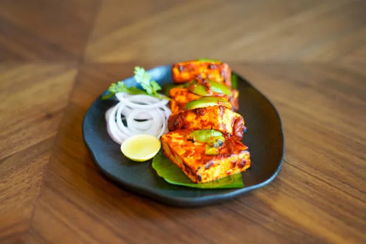

Paneer Tikka

Description
This easy paneer tikka masala goes well with naan or basmati rice.
Ingredients
- ¼ cup butter
- 1 pound paneer, cut into 1/2-inch cubes
- 2 medium onions, finely chopped
- 1 medium green bell pepper, chopped
- 2 medium jalapeno peppers, chopped
- 1 tablespoon ground cashews
- 1 teaspoon garlic paste
- 1 teaspoon ginger paste
- 1 teaspoon cayenne pepper
- 1 teaspoon ground cumin
- 1 teaspoon ground coriander
- 1 teaspoon garam masala
- 1 (16 ounce) can tomato sauce
- 1 pint half-and-half
- 1 teaspoon salt, or to taste
Steps
- Melt butter in a skillet over medium heat. Add paneer; cook and stir until golden, about 5 minutes. Add onions, bell pepper, jalapeños, ground cashews, garlic paste, ginger paste, cayenne pepper, cumin, coriander, and garam masala; cook and stir until well combined and fragrant, about 1 minute.
- Mix tomato sauce, half-and-half, and salt into paneer mixture; simmer until thickened, about 30 minutes.